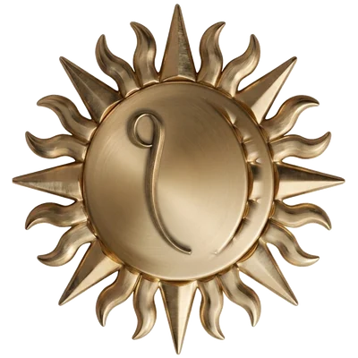

<title>Ekam Foundation</title>
<link rel="preconnect" href="https://fonts.googleapis.com">
<link rel="preconnect" href="https://fonts.gstatic.com" crossorigin>
<link rel="stylesheet" href="https://fonts.googleapis.com/css2?family=Montserrat:ital,wght@0,400;0,500;0,600;0,700;1,400&family=Oswald:wght@400;500;600;700&display=swap">

<style>
  /* Typography system carried over from heroicothemusical.com:
     Montserrat body + Oswald display (their h1 fallback), their size scale,
     line-heights, tracking and layout tokens. Ekam keeps its own palette. */
  :root{
    --paper:#F4EFE3; --paper-2:#EDE6D4; --raise:#FBF8EF;
    --ink:#242A2E; --ink-soft:#5B5F58; --line:#DED4BD;
    --gold:#8F7330; --gold-deep:#6C5220; --gold-tint:#EFE4C6;
    --shadow:rgba(45,38,18,.16);

    --font:"Montserrat",system-ui,-apple-system,"Segoe UI",Roboto,sans-serif;
    --display:"Oswald","Arial Narrow",system-ui,sans-serif;
    --measure:66ch;
    --gutter:clamp(1.25rem,5vw,2.5rem);
    --page-max:1320px;
    --eyebrow:0.7rem;
    --maxw:1320px;
  }
  @media (prefers-color-scheme:dark){
    :root:not([data-theme="light"]){
      --paper:#15140E; --paper-2:#1E1C13; --raise:#211E15;
      --ink:#ECE4D1; --ink-soft:#9F9880; --line:#332F21;
      --gold:#BE9738; --gold-deep:#8A6B26; --gold-tint:#2C2718;
      --shadow:rgba(0,0,0,.5);
    }
  }
  :root[data-theme="dark"]{
    --paper:#15140E; --paper-2:#1E1C13; --raise:#211E15;
    --ink:#ECE4D1; --ink-soft:#9F9880; --line:#332F21;
    --gold:#BE9738; --gold-deep:#8A6B26; --gold-tint:#2C2718;
    --shadow:rgba(0,0,0,.5);
  }
  :root[data-theme="light"]{
    --paper:#F4EFE3; --paper-2:#EDE6D4; --raise:#FBF8EF;
    --ink:#242A2E; --ink-soft:#5B5F58; --line:#DED4BD;
    --gold:#8F7330; --gold-deep:#6C5220; --gold-tint:#EFE4C6;
    --shadow:rgba(45,38,18,.16);
  }

  *{box-sizing:border-box}
  html{scroll-behavior:smooth; scroll-padding-top:76px}
  body{
    margin:0; background:var(--paper); color:var(--ink);
    font-family:var(--font); font-size:0.96rem; line-height:1.5;
    -webkit-font-smoothing:antialiased;
  }
  h1,h2{font-family:var(--display); font-weight:500; line-height:1.06; text-wrap:balance; margin:0}
  h3{font-family:var(--font); font-weight:700; font-size:1.02rem; line-height:1.32; letter-spacing:-0.005em; margin:0}
  p{margin:0}
  a{color:inherit; text-decoration:none}
  ::selection{background:var(--gold-tint)}
  :focus-visible{outline:2px solid var(--gold); outline-offset:3px; border-radius:3px}

  .wrap{max-width:var(--page-max); margin:0 auto; padding:0 var(--gutter)}
  .eyebrow{font-size:var(--eyebrow); font-weight:600; letter-spacing:.11em; text-transform:uppercase; color:var(--gold)}
  .lede{font-size:1rem; line-height:1.5; color:var(--ink-soft); max-width:46ch}
  .prose{max-width:var(--measure)}

  .btn{
    display:inline-flex; align-items:center; justify-content:center; gap:.5rem;
    font-family:var(--font); font-weight:600; font-size:.74rem;
    letter-spacing:.11em; text-transform:uppercase;
    padding:.95rem 1.4rem; border-radius:0; border:1px solid var(--ink);
    color:var(--ink); background:transparent;
    transition:background .15s,border-color .15s,color .15s;
  }
  .btn:hover{background:var(--gold); border-color:var(--gold); color:var(--paper)}
  .btn.solid{background:var(--ink); border-color:var(--ink); color:var(--paper)}
  .btn.solid:hover{background:var(--gold); border-color:var(--gold); color:var(--paper)}

  /* header */
  header{
    position:sticky; top:0; z-index:20;
    background:color-mix(in srgb, var(--paper) 88%, transparent);
    backdrop-filter:blur(8px); -webkit-backdrop-filter:blur(8px);
    border-bottom:1px solid var(--line);
  }
  .bar{display:flex; align-items:center; gap:22px; height:64px}
  .brand{display:flex; align-items:center; gap:11px; margin-right:auto}
  .brand img{width:30px; height:30px; display:block}
  .brand b{font-family:var(--display); font-weight:600; font-size:1.05rem; letter-spacing:.06em}
  nav{display:flex; align-items:center; gap:18px}
  nav a{position:relative; font-size:.7rem; font-weight:600; letter-spacing:.11em; text-transform:uppercase; color:var(--ink-soft); transition:color .15s}
  nav a:hover{color:var(--ink)}
  nav a:not(:last-child)::after{content:"·"; position:absolute; right:-11px; color:var(--line)}
  .bar .btn{padding:.6rem 1rem}
  @media (max-width:760px){ nav{display:none} }

  /* hero */
  .hero{position:relative; overflow:hidden; border-bottom:1px solid var(--line)}
  .hero .wrap{padding-top:clamp(2.5rem,7vw,4.5rem); padding-bottom:clamp(2.5rem,7vw,4.5rem);
    display:grid; grid-template-columns:0.82fr 1.18fr; gap:clamp(2rem,6vw,4rem); align-items:center}
  .hero-emblem{position:relative; justify-self:center; width:min(360px,72vw); aspect-ratio:1}
  .hero-emblem img{position:absolute; inset:12%; width:76%; height:76%; filter:drop-shadow(0 10px 24px var(--shadow))}
  .hero-emblem svg{position:absolute; inset:0; width:100%; height:100%; color:var(--gold); opacity:.16}
  .hero h1{font-size:clamp(2.8rem,11vw,5rem); line-height:1.02; letter-spacing:0; font-weight:600}
  .hero h1 em{font-style:normal; color:var(--gold)}
  .hero .lede{margin-top:1.2rem}
  .hero .cta{display:flex; gap:.9rem; flex-wrap:wrap; margin-top:.4rem}
  @media (max-width:860px){
    .hero .wrap{grid-template-columns:1fr; text-align:left}
    .hero-emblem{order:-1; width:min(240px,58vw)}
  }

  /* facts strip */
  .facts{background:var(--paper-2); border-bottom:1px solid var(--line)}
  .facts .wrap{display:grid; grid-template-columns:repeat(4,1fr); gap:1px; padding-top:0; padding-bottom:0}
  .fact{padding:20px 22px 20px 0}
  .fact dt{font-size:.68rem; font-weight:600; letter-spacing:.14em; text-transform:uppercase; color:var(--gold)}
  .fact dd{margin:.4em 0 0; font-size:.9rem; color:var(--ink)}
  @media (max-width:720px){ .facts .wrap{grid-template-columns:1fr 1fr} }
  @media (max-width:420px){ .facts .wrap{grid-template-columns:1fr} .fact{padding-right:0} }

  /* generic section */
  .section{padding:clamp(3rem,8vw,5.5rem) 0}
  .section + .section{border-top:1px solid var(--line)}
  .section-head{max-width:60ch; margin-bottom:clamp(1.75rem,5vw,3rem)}
  .section-head h2{font-size:clamp(1.7rem,5vw,2.7rem); line-height:1.08; max-width:26ch; margin-top:.6rem}
  .section-head p{margin-top:.9rem; color:var(--ink-soft)}

  /* pillars */
  .pillars{display:grid; grid-template-columns:1fr 1fr; gap:clamp(16px,2.5vw,26px)}
  .pillar{
    background:var(--raise); border:1px solid var(--line); border-radius:0;
    padding:clamp(24px,3vw,34px); display:flex; flex-direction:column; gap:.9rem;
    transition:border-color .18s, transform .18s, box-shadow .18s;
  }
  .pillar:hover{border-color:var(--gold); transform:translateY(-3px); box-shadow:0 16px 34px -22px var(--shadow)}
  .pillar .n{font-family:var(--display); font-weight:500; font-size:1.1rem; color:var(--gold); letter-spacing:.06em}
  .pillar h3{font-size:1.05rem}
  .pillar > p{color:var(--ink-soft); font-size:.92rem}
  .pillar ul{margin:.4rem 0 0; padding:.9rem 0 0; border-top:1px solid var(--line);
    list-style:none; display:flex; flex-direction:column; gap:.55rem}
  .pillar li{position:relative; padding-left:1.15rem; font-size:.86rem; line-height:1.45; color:var(--ink)}
  .pillar li::before{content:""; position:absolute; left:0; top:.62em; width:6px; height:6px; background:var(--gold); border-radius:50%}
  @media (max-width:720px){ .pillars{grid-template-columns:1fr} }

  /* mandate */
  .mandate{display:grid; grid-template-columns:repeat(2,1fr); gap:0 clamp(28px,5vw,60px)}
  .mandate ol{margin:0; padding:0; list-style:none; counter-reset:m}
  .mandate ol:nth-of-type(2){counter-reset:m 5}
  .mandate li{
    counter-increment:m; padding:16px 0; border-bottom:1px solid var(--line);
    display:grid; grid-template-columns:2.4rem 1fr; gap:.4rem; font-size:.88rem; line-height:1.5;
  }
  .mandate li::before{
    content:counter(m,decimal-leading-zero); font-family:var(--display); font-weight:500;
    font-size:1.1rem; color:var(--gold); line-height:1.4;
  }
  .mandate-note{
    grid-column:1 / -1; margin-top:1.8rem; padding:16px 20px; border-left:2px solid var(--gold);
    background:var(--paper-2); font-size:.86rem; line-height:1.5; color:var(--ink-soft);
  }
  @media (max-width:720px){ .mandate{grid-template-columns:1fr} }

  /* how we work */
  .principles{display:grid; grid-template-columns:repeat(2,1fr); gap:clamp(20px,3vw,34px)}
  .principle{display:flex; flex-direction:column; gap:.5rem; padding-top:1.1rem; border-top:2px solid var(--ink)}
  .principle h3{font-size:1.05rem}
  .principle p{font-size:.9rem; color:var(--ink-soft)}
  @media (max-width:640px){ .principles{grid-template-columns:1fr} }

  /* involved */
  #involved{background:var(--paper-2)}
  .give{display:grid; grid-template-columns:repeat(3,1fr); gap:clamp(18px,3vw,30px); margin-bottom:2.4rem}
  .give > div{display:flex; flex-direction:column; gap:.6rem}
  .give h3{font-size:1.05rem}
  .give p{font-size:.9rem; color:var(--ink-soft); flex:1}
  .give .amt{font-family:var(--display); font-weight:500; font-size:1.05rem; letter-spacing:.02em; color:var(--gold)}
  .give a{align-self:flex-start; margin-top:.4rem; font-family:var(--font); font-weight:600; font-size:.7rem;
    letter-spacing:.11em; text-transform:uppercase; color:var(--gold-deep); border-bottom:1px solid var(--gold)}
  .give a:hover{color:var(--ink)}
  @media (max-width:760px){ .give{grid-template-columns:1fr} }

  /* footer */
  footer{border-top:1px solid var(--line); padding:clamp(2.75rem,7vw,4.5rem) 0 2.5rem; font-size:.86rem}
  .foot-grid{display:grid; grid-template-columns:1.3fr 1fr 1fr; gap:32px}
  .foot-brand{display:flex; align-items:center; gap:12px; margin-bottom:1rem}
  .foot-brand img{width:36px; height:36px}
  .foot-brand b{font-family:var(--display); font-weight:600; letter-spacing:.06em}
  footer address{font-style:normal; color:var(--ink-soft); line-height:1.9}
  footer h4{margin:0 0 .5rem; font-family:var(--font); font-weight:600; font-size:.68rem; letter-spacing:.14em; text-transform:uppercase; color:var(--gold)}
  footer a:hover{color:var(--gold)}
  .legal{margin-top:2.4rem; padding-top:1.4rem; border-top:1px solid var(--line); color:var(--ink-soft); font-size:.78rem; line-height:1.6; max-width:70ch}
  @media (max-width:760px){ .foot-grid{grid-template-columns:1fr} }

  @media (prefers-reduced-motion:reduce){ *{transition:none!important; scroll-behavior:auto} }
</style>

<header>
  <div class="wrap bar">
    <a class="brand" href="#top">
      
      <b>EKAM&nbsp;FOUNDATION</b>
    </a>
    <nav>
      <a href="#about">About</a>
      <a href="#work">Our work</a>
      <a href="#mandate">Mandate</a>
      <a href="#involved">Get involved</a>
      <a href="#contact">Contact</a>
    </nav>
    <a class="btn" href="#involved">Get involved</a>
  </div>
</header>

<main id="top">

  <section class="hero" id="about">
    <div class="wrap">
      <div>
        <span class="eyebrow">Registered non-profit &middot; Lalitpur, Nepal</span>
        <h1><em>Ekam</em> means <em>one</em>.</h1>
        <p class="lede">Ekam Foundation rebuilds what disasters take, safeguards Nepal&rsquo;s living heritage,
          and stands with the people the system reaches last &mdash; working alongside communities, not for them.</p>
        <div class="cta">
          <a class="btn solid" href="#involved">Become a member</a>
          <a class="btn" href="#involved">Support our work</a>
        </div>
      </div>
      <div class="hero-emblem">
        <svg viewBox="0 0 200 200" aria-hidden="true">
          <g stroke="currentColor" stroke-width="1">
            <!-- rays drawn by JS-free repetition -->
          </g>
        </svg>
        
      </div>
    </div>
  </section>

  <dl class="facts">
    <div class="wrap">
      <div class="fact"><dt>Legal status</dt><dd>Profit non-distributing company</dd></div>
      <div class="fact"><dt>Registration</dt><dd>No. 394399/82/83</dd></div>
      <div class="fact"><dt>Established</dt><dd>10 June 2026 &middot; Jeth 2083</dd></div>
      <div class="fact"><dt>Registrar</dt><dd>Office of the Company Registrar, Nepal</dd></div>
    </div>
  </dl>

  <section class="section" id="work">
    <div class="wrap">
      <div class="section-head">
        <span class="eyebrow">Our work</span>
        <h2>Four areas, one purpose</h2>
        <p>Ekam&rsquo;s charter runs from the first hours after a disaster to the slow work of
          conservation and inclusion. We group it into four programmes.</p>
      </div>

      <div class="pillars">
        <article class="pillar">
          <span class="n">01</span>
          <h3>Disaster response &amp; preparedness</h3>
          <p>When earthquake, flood, landslide or fire strikes, Ekam moves first &mdash; and stays for what comes after.</p>
          <ul>
            <li>Immediate search and rescue, relief-material distribution and first aid</li>
            <li>Community awareness and preparedness training for disaster risk reduction</li>
            <li>Income-generating support to help affected families restore their livelihoods</li>
          </ul>
        </article>

        <article class="pillar">
          <span class="n">02</span>
          <h3>Reconstruction &amp; community infrastructure</h3>
          <p>Rebuilding for the long term: buildings safer than what stood before, planned with the people who will use them.</p>
          <ul>
            <li>Technical and financial support to rebuild schools, health posts, community halls and homes damaged by disaster</li>
            <li>Participatory infrastructure projects in rural and underserved areas</li>
          </ul>
        </article>

        <article class="pillar">
          <span class="n">03</span>
          <h3>Heritage &amp; living culture</h3>
          <p>Nepal&rsquo;s temples, monasteries and crafts are held in trust for the next generation. Ekam helps keep them standing &mdash; and in use.</p>
          <ul>
            <li>Repair, maintenance and conservation of temples, gumbas, chaityas and other sites of historic and archaeological value</li>
            <li>Festivals, exhibitions and cultural programmes carrying forward indigenous art, language and tradition</li>
            <li>Training centres that pass traditional skills and craftsmanship to young people</li>
          </ul>
        </article>

        <article class="pillar">
          <span class="n">04</span>
          <h3>Inclusion &amp; environment</h3>
          <p>A fairer, greener Nepal: services for those reached last, and everyday practice that protects the land.</p>
          <ul>
            <li>Education, health and protection programmes for children, elders, people with disabilities and families in hardship</li>
            <li>Afforestation, waste management, pollution control and clean-energy initiatives</li>
          </ul>
        </article>
      </div>
    </div>
  </section>

  <section class="section" id="mandate">
    <div class="wrap">
      <div class="section-head">
        <span class="eyebrow">The mandate</span>
        <h2>What we are chartered to do</h2>
        <p>The objectives below are recorded in Ekam Foundation&rsquo;s Memorandum of Association,
          filed with the Office of the Company Registrar.</p>
      </div>

      <div class="mandate">
        <ol>
          <li><span>Technical and financial support for the sustainable reconstruction of public schools, health posts, community buildings and private homes damaged by natural disaster or other causes.</span></li>
          <li><span>Participatory infrastructure development in rural and underserved regions.</span></li>
          <li><span>Immediate rescue, relief-material distribution and first-aid services during disasters such as earthquake, flood, landslide and fire.</span></li>
          <li><span>Public-awareness programmes for disaster risk reduction, and preparedness training for local communities.</span></li>
          <li><span>Income-generating programmes for the rehabilitation and livelihoods of disaster-affected families.</span></li>
        </ol>
        <ol start="6">
          <li><span>Cultural programmes, festivals and exhibitions that preserve indigenous fine art, culture, language and tradition.</span></li>
          <li><span>Repair, maintenance and conservation of temples, monasteries, stupas and other culturally, historically and archaeologically significant heritage.</span></li>
          <li><span>Training centres to transfer traditional skills and craftsmanship to new generations.</span></li>
          <li><span>Dedicated programmes for the education, health and protection of the poor and vulnerable, children, senior citizens and persons with disabilities.</span></li>
          <li><span>Programmes promoting environmental protection &mdash; afforestation, waste management, pollution control and the use of clean energy.</span></li>
        </ol>
        <p class="mandate-note">Programmes that require sectoral approval are undertaken only after the relevant
          licence or permission is obtained from the competent authority, as required by law and by the conditions of registration.</p>
      </div>
    </div>
  </section>

  <section class="section" id="how">
    <div class="wrap">
      <div class="section-head">
        <span class="eyebrow">How we work</span>
        <h2>Principles set in the charter</h2>
      </div>
      <div class="principles">
        <div class="principle">
          <h3>Participatory by design</h3>
          <p>Communities plan and build alongside us. Infrastructure work is explicitly participatory &mdash; local knowledge and local labour lead.</p>
        </div>
        <div class="principle">
          <h3>Open to partnership</h3>
          <p>We undertake joint projects with Nepali and international organisations, firms and government bodies whose goals meet ours.</p>
        </div>
        <div class="principle">
          <h3>Accountable with funds</h3>
          <p>As a profit non-distributing non-profit, no surplus is paid out. Membership fees, grants and donations are pooled and spent on the objectives.</p>
        </div>
        <div class="principle">
          <h3>On the record</h3>
          <p>Ekam is governed by a written memorandum, a formal management structure and published information. This site is the foundation&rsquo;s official record.</p>
        </div>
      </div>
    </div>
  </section>

  <section class="section" id="involved">
    <div class="wrap">
      <div class="section-head">
        <span class="eyebrow">Get involved</span>
        <h2>Three ways to stand with Ekam</h2>
      </div>
      <div class="give">
        <div>
          <h3>Become a member</h3>
          <p>Members guide the foundation&rsquo;s direction and share in its work.</p>
          <span class="amt">One-time contribution &middot; Rs&nbsp;10,000</span>
          <a href="mailto:info@ekamfdn.org?subject=Membership%20enquiry">Write to us</a>
        </div>
        <div>
          <h3>Give</h3>
          <p>Donations and grants &mdash; from individuals, institutions or partners at home and abroad &mdash; fund programmes directly.</p>
          <span class="amt">Any amount</span>
          <a href="mailto:info@ekamfdn.org?subject=Donation">Contact the foundation</a>
        </div>
        <div>
          <h3>Partner</h3>
          <p>We take on joint projects with organisations whose objectives meet ours. Tell us what you&rsquo;re building.</p>
          <span class="amt">Institutions &amp; NGOs</span>
          <a href="mailto:info@ekamfdn.org?subject=Partnership">Start a conversation</a>
        </div>
      </div>
      <p class="prose" style="color:var(--ink-soft); font-size:.92rem">
        Prefer to call? Reach the foundation on
        <a href="tel:+9779851092750" style="border-bottom:1px solid var(--gold)">+977&nbsp;985&nbsp;109&nbsp;2750</a>
        or <a href="tel:+9779851035305" style="border-bottom:1px solid var(--gold)">+977&nbsp;985&nbsp;103&nbsp;5305</a>.
      </p>
    </div>
  </section>

</main>

<footer id="contact">
  <div class="wrap">
    <div class="foot-grid">
      <div>
        <div class="foot-brand">
          
          <b>EKAM&nbsp;FOUNDATION</b>
        </div>
        <address>
          <span lang="ne">एकम फाउण्डेशन</span><br>
          Lalitpur Metropolitan City &ndash; 2<br>
          Lalitpur, Bagmati Province, Nepal
        </address>
      </div>
      <div>
        <h4>Contact</h4>
        <address>
          <a href="tel:+9779851092750">+977&nbsp;985&nbsp;109&nbsp;2750</a><br>
          <a href="tel:+9779851035305">+977&nbsp;985&nbsp;103&nbsp;5305</a><br>
          <a href="mailto:info@ekamfdn.org">info@ekamfdn.org</a><br>
          <a href="https://www.ekamfdn.org">www.ekamfdn.org</a>
        </address>
      </div>
      <div>
        <h4>Sections</h4>
        <address>
          <a href="#about">About</a><br>
          <a href="#work">Our work</a><br>
          <a href="#mandate">Mandate</a><br>
          <a href="#involved">Get involved</a>
        </address>
      </div>
    </div>
    <p class="legal">
      Ekam Foundation is a profit non-distributing company registered with the Office of the Company
      Registrar, Government of Nepal (Reg. No.&nbsp;394399/82/83), incorporated on 10&nbsp;June&nbsp;2026
      under the Companies Act, 2006 (2063&nbsp;BS). This website is the foundation&rsquo;s official
      informational record. &copy;&nbsp;2026 Ekam Foundation.
    </p>
  </div>
</footer>

<script>
  // draw the faint sun-ray flourish behind the hero emblem
  (function(){
    var svg = document.querySelector('.hero-emblem svg g');
    if(!svg) return;
    var ns = 'http://www.w3.org/2000/svg';
    for(var i=0;i<36;i++){
      var a = (i/36)*Math.PI*2;
      var l = document.createElementNS(ns,'line');
      l.setAttribute('x1', 100 + Math.cos(a)*34);
      l.setAttribute('y1', 100 + Math.sin(a)*34);
      l.setAttribute('x2', 100 + Math.cos(a)*98);
      l.setAttribute('y2', 100 + Math.sin(a)*98);
      svg.appendChild(l);
    }
  })();
</script>
